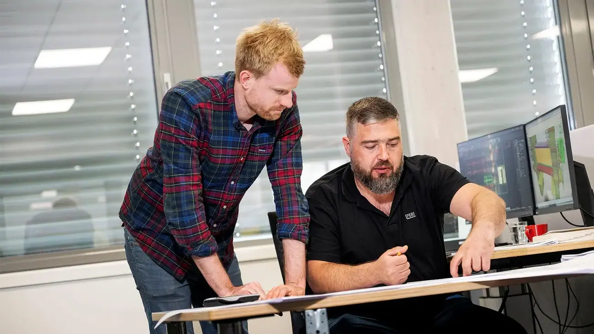

Forskaling
Systemforskaling for vegg, dekke og søyle – tilpasset prosjektets geometri og produksjonstakt.
Velkommen til PERI – din pålitelige partner for forskalings- og stillassystemer. Med innovative løsninger og bred teknisk kompetanse støtter vi deg gjennom hele byggeprosessen, fra idé og løsning til effektiv materialbruk og ferdig resultat.

Vi dekker forskaling, stillas og teknisk støtte – til bolig, næring, offentlige bygg og infrastruktur.
Systemforskaling for vegg, dekke og søyle – tilpasset prosjektets geometri og produksjonstakt.
Stillassystemer for fasade, arbeid og sikring, med komponenter som passer sammen.
Teknisk avdeling hjelper med løsninger, statikk og dokumentasjon for ditt prosjekt.
Du kan leie eller kjøpe – vi hjelper deg å regne på hva som lønner seg.
Transport og retur av materiell, slik at materialet er på plass når det trengs.
Vi viser hvordan systemene brukes riktig og sikkert på byggeplassen.



Ring 32 20 49 40 eller send en henvendelse. Vi ser på løsningen sammen med deg.